Super Mario Bros. (1985)

La misión fundamental de este juego es clara: Mario debe viajar a través de ocho mundos para rescatar a la Princesa Peach del malvado Rey de los Koopas, Bowser, quien ha invadido el Reino Champiñón y ha convertido a sus habitantes en bloques de piedra. Para lograrlo, Mario se enfrenta a Goombas y Koopa Troopas, utilizando potenciadores como el Super Champiñón, la Flor de Fuego y la Estrella de Invencibilidad para restaurar la paz en el reino.
Super Mario Bros. 2 (Japón) / The Lost Levels (1986)
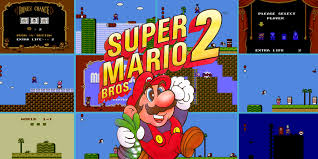La premisa narrativa es la misma que la del original: Mario y Luigi deben volver a enfrentarse a Bowser en el Reino Champiñón. Sin embargo, en esta secuela, Bowser no ha sido completamente derrotado, y el desafío es aún mayor. Los héroes se aventuran a través de niveles diseñados para ser mucho más difíciles que los anteriores, lidiando con trampas como los Vientos y los Champiñones Venenosos, demostrando que su viaje para asegurar la paz está lejos de terminar.
Super Mario Bros. 2 (Occidente) (1988)
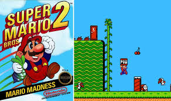En esta aventura, Mario, Luigi, Peach y Toad caen en el mundo de Subcon, una tierra de sueños que ha sido maldecida por el tirano rana Wart. El juego se desarrolla como si fuera un sueño de Mario. La misión es ascender a la guarida de Wart y liberarlo de su dominio, usando el nuevo método de desenterrar y lanzar objetos a los enemigos para avanzar a través de los diversos niveles verticales y horizontales de este mundo onírico.
Super Mario Bros. 3 (1988)

Bowser regresa con un plan más elaborado: ha enviado a sus siete hijos, los Koopalings, a conquistar los siete reinos que rodean el Reino Champiñón. Cada Koopaling roba el cetro mágico del rey del respectivo reino y lo transforma en un animal inofensivo. Mario y Luigi deben viajar a través de un mapa mundial expansivo, recuperar cada cetro de manos de los Koopalings en sus Dirigibles y, finalmente, enfrentar a Bowser en su fortaleza para salvar a la Princesa Peach.
Super Mario World (1990)
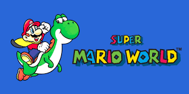Mientras Mario, Luigi y Peach están de vacaciones en Dinosaur Land, la Princesa Peach es secuestrada por Bowser. Mario y Luigi deben explorar los siete mundos de Dinosaur Land para encontrar a Peach. En su camino, se encuentran con Yoshi, quien se une a la causa. La aventura consiste en descubrir rutas secretas, entrar en castillos protegidos por los Koopalings y, finalmente, derrotar a Bowser para liberar a Peach y a los amigos dinosaurios de Yoshi que también han sido encarcelados.
Super Mario 64 (1996)

Mario es invitado al castillo de Peach para un pastel, pero al llegar, descubre que Bowser ha tomado el control del lugar usando el poder de las Estrellas de Poder. La Princesa Peach y los Toads han sido encarcelados dentro de las paredes del castillo. La misión de Mario es saltar dentro de los cuadros que sirven como portales a mundos 3D expansivos para recolectar las Estrellas de Poder necesarias, restaurar la magia del castillo y confrontar a Bowser para liberar a Peach.
Super Mario Sunshine (2002)
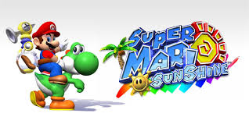Mario, Peach y un grupo de Toads viajan de vacaciones a la soleada Isla Delfino, pero al llegar, descubren que un impostor que se parece exactamente a Mario ha cubierto la isla de lodo tóxico y grafitis. Mario es arrestado por el crimen. Para limpiar su nombre y salvar a la isla de la oscuridad, Mario utiliza el dispositivo F.L.U.D.D. para limpiar la pintura y recolectar los Shine Sprites que le robó el verdadero culpable, que resulta ser Bowser Jr.
New Super Mario Bros. (2006)

Siguiendo la narrativa clásica, la aventura comienza con la Princesa Peach siendo secuestrada por Bowser (o inicialmente por Bowser Jr.). Mario debe volver a su formato 2D clásico y viajar a través de ocho mundos temáticos. La meta es perseguir a los Koopalings, enfrentarse a Bowser y Bowser Jr. en el castillo final, utilizando el nuevo Mega Champiñón y otros potenciadores para lograr el rescate.
Super Mario Galaxy (2007)

Mientras Mario y Peach asisten a un festival estelar, Bowser ataca el Reino Champiñón y utiliza una flota de naves espaciales para arrancar el castillo de Peach de sus cimientos y llevarlo al centro del universo. Mario es arrojado al espacio donde se encuentra con Rosalina y los Lumas. Su misión es viajar por la galaxia, saltando entre planetas y recolectando Power Stars para impulsar el Observatorio Cometa de Rosalina y así llegar a Bowser para rescatar a Peach.
New Super Mario Bros. Wii (2009)
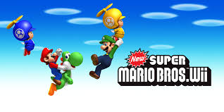La historia se desarrolla durante la fiesta de cumpleaños de la Princesa Peach: un enorme pastel aparece, y de él salen los Koopalings, quienes secuestran a Peach. La aventura es un viaje 2D clásico a través de nueve mundos, donde Mario, Luigi y hasta dos Toads deben trabajar (o competir) en modo cooperativo para perseguir a los Koopalings en sus dirigibles y finalmente enfrentarse a Bowser para llevar a Peach de regreso al castillo.
Super Mario Galaxy 2 (2010)
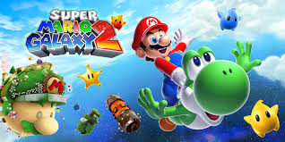Una vez más, Bowser ataca el Reino Champiñón, esta vez transformándose en un gigante para llevar a cabo otro secuestro masivo de la Princesa Peach. Mario, ayudado por un Luma que se convierte en su compañero de gorra, debe viajar a través de nuevas galaxias. La misión es recolectar las Power Stars y Super Stars para alimentar la nave espacial Mario, una versión de la cabeza de Mario, que le permite viajar de un mundo a otro para enfrentar y detener a un Bowser de tamaño titánico.
Super Mario 3D Land (2011)
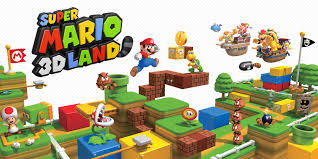El juego comienza con una fuerte tormenta que arranca todas las hojas Tanuki del Árbol de la Cola en el Reino Champiñón, y Bowser aprovecha el caos para secuestrar a Peach. Mario, usando el poder de las hojas Tanuki restantes que encuentra, debe viajar a través de mundos lineales pero en 3D para salvarla. La misión es recuperar el Árbol de la Cola, perseguir a Bowser y rescatar a Peach de sus secuaces, combinando la sensación de aventura 3D con la estructura de niveles 2D.
New Super Mario Bros. U (2012)
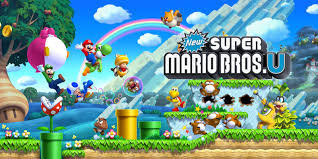Bowser y los Koopalings utilizan un brazo mecánico gigante en su nave aérea para arrojar a Mario, Luigi y los Toads lejos del Castillo de Peach. Los héroes aterrizan en el lejano Acorn Plains. Su tarea es viajar de vuelta al castillo, abriéndose camino a través de mundos enormes y nuevos enemigos. La misión culmina con la derrota de los Koopalings y un enfrentamiento final con Bowser para recuperar el control del castillo.
Super Mario 3D World (2013)
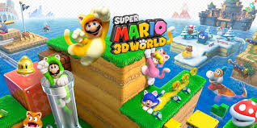Mario, Luigi, Peach y Toad son testigos de cómo Bowser secuestra a las siete Princesas Hada del Reino Sprixie dentro de un frasco. Los héroes entran por una tubería de cristal y viajan a través del Reino Sprixie. La misión es recorrer mundos vibrantes, a menudo en modo cooperativo, para recuperar las siete princesas secuestradas. Utilizan el nuevo Traje de Gato para escalar y luchar hasta llegar a la fortaleza de Bowser y liberarlas.
Super Mario Maker (2015)
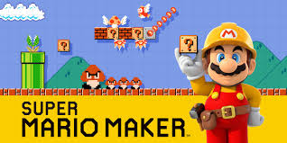Este título tiene una premisa más enfocada en la creación que en la aventura. El jugador asume el rol de un diseñador de niveles, creando sus propios escenarios de plataformas de Mario. El "juego" principal consiste en la creación, prueba y compartición de niveles con la comunidad global. Si hay una misión, es la de liberar la creatividad, aunque también incluye desafíos preconstruidos.
Super Mario Odyssey (2017)

Bowser vuelve a secuestrar a Peach, esta vez con la intención de obligarla a casarse con él en una boda intergaláctica. Mario debe viajar con su nuevo compañero, Cappy (un espíritu de sombrero del Reino del Sombrero cuya hermana, Tiara, también ha sido secuestrada). La misión es viajar por reinos abiertos en la Odyssey, una nave con forma de sombrero, recolectando Energilunas para impulsarla y detener la planificación de la boda de Bowser, capturando enemigos y objetos con Cappy en el camino.
Super Mario Bros. Wonder (2023)

Bowser combina su poder con una Flor Maravilla y se fusiona con el castillo del Príncipe Florian, convirtiéndose en una fortaleza aérea flotante que amenaza el Reino Flor. Mario y sus amigos deben entrar en el Reino Flor. La misión es recolectar las Semillas Maravilla para devolver el Reino a la normalidad y detener a Bowser. El juego se centra en el elemento sorpresa, donde cada Flor Maravilla que se encuentra transforma el nivel de forma caótica y sorprendente.
Super Mario Party Jamboree (2024)
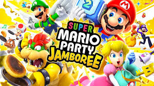Este juego no tiene una narrativa profunda de rescate, sino que se centra en una gran fiesta y competencia. El objetivo es dominar los tableros y los 110+ minijuegos, compitiendo contra amigos o jugadores en línea. La aventura se desarrolla en el complejo vacacional de un archipiélago. La misión es ganar tantas Estrellas como sea posible en los modos de juego, incluyendo el nuevo y masivo modo en línea "Koopathon" de 20 jugadores.